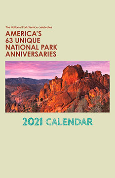
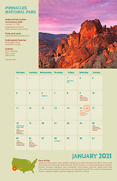

Social Media/Web
Recent Projects:
National Parks Calendar Concept
 Menu Concept

Interest in creating informative digital and print content for all audiences.
Currently a Production Manager/Educator, Anita is pursuing a Graphic Design Production Artist Technical Certificate from
Seminole State College (SCC). It's her goal to understand and implement the graphic production process through digital media and print production.
Areas that she's interested are graphic design, UI/UX experience, digital media, and graphic print publishing.
Her past experiences include
Marketing Coordinator focusing on proposals and an Outreach Educator for K-12 students teaching the elements of art in artworks. Along with SCC,
Anita is a hometown graduate from the University of Central Florida with a Journalism degree in Public Relations/Advertising and studies in Studio Art.
Free time includes her family unit and building her sketching skills.